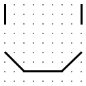

Zajugori is a constructed language (i.e. "conlang") designed for drawing using speech. The language was designed as an interesting experiment rather than a practical language as it functions more as a markup language or a code than a human language. Although communicating using the language would be possible, it would likely be very difficult and impractical, as Zajugori doesn't convey any semantic information. However, one possible way to communicate using Zajugori could be to draw images of as opposed to describing them.
This webpage is not protected by copyright and is placed in the public domain. You are free to copy, download, redistribute, modify, and publish this work, even for commercial purposes, all without permission or attribution.
Zajugori has 17 consonants: [m n p b t d k ɡ f v s z h w r j l] and 5 vowels: [i u e o a], illustrated in the IPA charts below. Zajugori uses the Latin alphabet, and every sound is written with its corresponding symbol in the International Phonetic Alphabet, except for the voiced velar stop, which is written with g, as opposed to ɡ. Stress falls on the first syllable of each word. Shown below is a table of each Zajugori letter with a description.
| a | A low front unrounded vowel; Similar to English father |
|---|---|
| b | A voiced bilabial stop; English bat |
| d | A voiced alveolar stop; English dot |
| e | A high-mid front unrounded vowel; Similar to English bet |
| f | A voiceless labiodental fricative; English find |
| g | A voiced velar stop; English get |
| h | A voiceless glottal fricative; English hat |
| i | A high front unrounded vowel; English beat |
| j | A voiced palatal approximant; English yes |
| k | An unaspirated voiceless velar stop; English skip |
| l | A voiced alveolar lateral approximant; English light |
| m | A voiced bilabial nasal stop; English map |
| n | A voiced alveolar nasal stop; English night |
| o | A high-mid back rounded vowel; Similar to English boat |
| p | An unaspirated voiceless bilabial stop; English spot |
| r | A voiced alveolar trill; A rolled r; Spanish perro |
| s | A voiceless alveolar fricative; English sauce |
| t | An unaspirated unvoiced alveolar stop; English start |
| u | A high back rounded vowel; English boot |
| v | A voiced labiodental fricative; English vent |
| w | A voiced labio-velar approximant; English water |
| z | A voiced alveolar fricative; English zoos |
Zajugori has just two phonotactic constraints:
The drawing occurs on 81 points, arranged into 9 rows, marked with numbers, and 9 columns, marked with letters. Each word corresponds to a line, and each syllable in the word corresponds to one of the 81 points. A monosyllabic word simply marks a dot on a point, but a polysyllabic word draws a line across each of the points its syllables define. The syllables were organized so consonants near the front of the mouth (i.e. bilabial) come before phonemes in the back of the mouth (i.e. glottal) and so that vowels circle around vowel space in the following order: i, e, a, o, and u, rather than in alphabetical order. Each possible syllable in the language that contains a consonant (which there are 81 of) is assigned to a point. Shown below is a table of the syllables for points.
| Column | ||||||||||
|---|---|---|---|---|---|---|---|---|---|---|
| A | B | C | D | E | F | G | H | I | ||
| Row | 1 | mi | me | ma | mo | mu | bi | be | ba | bo |
| 2 | bu | pi | pe | pa | po | pu | wi | we | wa | |
| 3 | vi | ve | va | vo | vu | fi | fe | fa | fo | |
| 4 | fu | ni | ne | na | no | nu | di | de | da | |
| 5 | do | du | ti | te | ta | to | tu | zi | ze | |
| 6 | za | zo | zu | si | se | sa | so | su | ri | |
| 7 | re | ra | ro | ru | li | le | la | lo | lu | |
| 8 | ja | jo | ju | gi | ge | ga | go | gu | ki | |
| 9 | ke | ka | ko | ku | hi | he | ha | ho | hu | |
For example, the words "mivi bofo zajugori" draw the following image:
The three words can be analyzed as follows:
Of course, since the lines in the previous example don't have to occur in any order to draw the image, Zajugori has free word order. The word i is used for clearing the image, and is the closest thing to punctuation in Zajugori, as Zajugori doesn't use punctuation. Additionally, a rotates the entire image 90° clockwise and u rotates it 90° counterclockwise. The word e flips the image over the y-axis and o flips it over the x-axis.